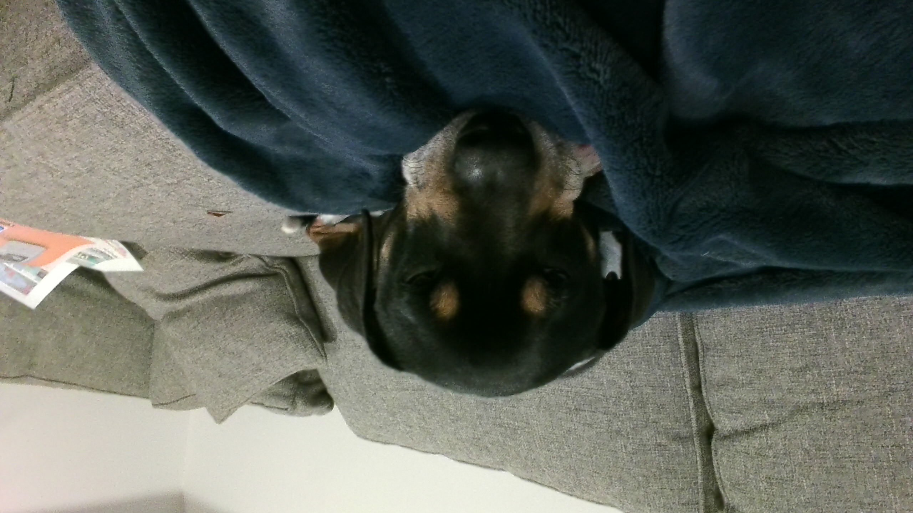

| About the Angus Angus is a dog in the North East of America. He is not a normal dog though. Angus has a PhD in sunbathing and napping, and he is the deiety of his own religion that is practiced by at least 10 8th-graders at a local school, and he also has a mild fear of dogs. Angus is a professional napper and sunbather. While he loves his job, he gets no vacation days and works this job for around 16 hours a day! In his freetime, he enjoys laying on the ground and/or sleeping. He also likes walks, hikes, eating, treats, eating, treats, and playing with his humans. |
 |